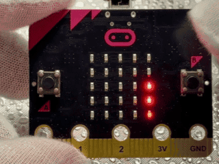
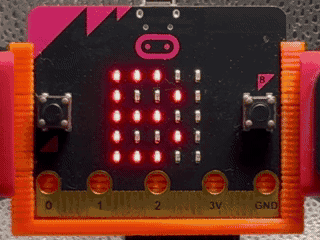
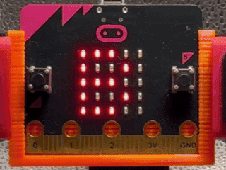
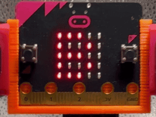
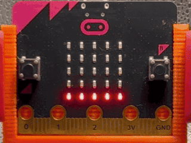

🌡️温度へんかLEDグラフ 🌡️温度変化LEDグラフ
このプログラムでは、micro:bitの温度センサーを使って、温度のちがいをLEDの数で見えるようにします。起動したときの温度をきじゅんにして、あたたかくなったか、さむくなったかを調べます。 このプログラムでは、micro:bitの温度センサーを使って、温度の違いをLEDの数で見えるようにします。起動したときの温度を基準にして、暖かくなったか、寒くなったかを調べます。
使い方
- 起動してすぐ、右列の下から3つのLEDがてんとうする（きじゅんの温度） 起動してすぐ、右列の下から3つのLEDが点灯する（基準の温度）
- 2秒ごとに温度をはかり、右列に新しい数をひょうじする 2秒ごとに温度を計り、右列に新しい数を表示する
- 気温が1度上がるとLEDの数がひとつふえて、1度下がるとひとつ少なくなる 気温が1度上がるとLEDの数がひとつ増えて、1度下がるとひとつ少なくなる
- 前のひょうじを左へ1列ずつおし出す動きをする 前の表示を左へ1列ずつ押し出す動きをする
- Bボタンで、起動時の温度にもどしてやりなおし Bボタンで、起動時の温度に戻してやり直し

ねらい
- 温度のちがいと数のかんけいのりかい 温度の違いと数の関係の理解
- 2秒ごとのきろくのくりかえし 2秒ごとの記録の繰り返し
- 右が新しく左が古いならびの学び 右が新しく左が古い並びの学び
チャレンジ
- 2秒を1秒や5秒へかえる工夫 2秒を1秒や5秒へ変える工夫
- きじゅんの温度のLEDの数を、3つから2つや4つへかえてみる 基準の温度のLEDの数を、3つから2つや4つへ変えてみる
- +3度いじょうや-3度いかのときの数の決まりを作ってみる +3度以上や-3度以下のときの数の決まりを作ってみる
💡帰り道あんぜんあかり見まもり 💡帰り道安全明かり見守り
このプログラムでは、micro:bitの明るさセンサーを使って、帰り道の明るさをチェックすることができます。 このプログラムでは、micro:bitの明るさセンサーを使って、帰り道の明るさをチェックすることができます。
使い方
- micro:bitをかばんやランドセルに入れて、LED面が外の方を向くように持つ micro:bitをかばんやランドセルに入れて、LED面が外の方を向くように持つ
- 帰り道を歩いているとき、気になる場所でBボタンをおして明るさのマークを出す 帰り道を歩いているとき、気になる場所でBボタンを押して明るさのマークを出す
- 明るいときはにっこりした顔が出て、安全に歩けそうな道だとわかる 明るいときはにっこりした顔が出て、安全に歩けそうな道だとわかる
- 少し暗いときはむすっとした顔が出て、気をつけたい道だとわかる 少し暗いときはむすっとした顔が出て、気をつけたい道だとわかる
- とても暗いときはドクロのマークが出るので、ちがう道を使ったり、安全に歩くよいやり方を話し合おう とても暗いときはドクロのマークが出るので、違う道を使ったり、安全に歩く良いやり方を話し合おう
- Aボタンをおすと、明るさが数字でひょうじされる Aボタンを押すと、明るさが数字で表示される

ねらい
- 冬の帰り道の明るさと安全とのつながりに気づく学習 冬の帰り道の明るさと安全とのつながりに気づく学習
- 明るさの数字やマークのようすから、自分の通学路を見つめなおす学習 明るさの数字やマークの様子から、自分の通学路を見つめ直す学習
- 友だちと意見を出し合って、帰り道の安全を高める学習 友達と意見を出し合って、帰り道の安全を高める学習
チャレンジ
- 一日の中でいろいろな場所の明るさをはかって、地図や通学路カードにまとめる活動 一日の中で色々な場所の明るさを測って、地図や通学路カードにまとめる活動
- 冬だけでなく、春や秋にも同じ道で明るさをくらべる学習 冬だけでなく、春や秋にも同じ道で明るさを比べる学習
- 家の人といっしょに通学路を歩いて、より安全な帰り方を考える活動 家の人と一緒に通学路を歩いて、より安全な帰り方を考える活動
👚気温で服のまいすうチェッカー 👚気温で服の枚数チェッカー
このプログラムでは、micro:bitの温度センサーを使って、気温に合わせて服を何まい着るとよさそうかをひょうじします。 このプログラムでは、micro:bitの温度センサーを使って、気温に合わせて服を何枚着るとよさそうかを表示します。
使い方
- Aボタンをおすと、外の気温が数字でひょうじされる Aボタンを押すと、外の気温が数字で表示される
- Bボタンをおすと、気温に合わせて服のまいすうがひょうじされる Bボタンを押すと、気温に合わせて服の枚数が表示される
- ひょうじされた「1」「2」「3」の数字を見て、今日着る服のまいすうを決める 表示された「1」「2」「3」の数字を見て、今日着る服の枚数を決める
- 3まいと出たとき（～10℃）はとてもさむい日として、上着や中に着る服をふやす 3枚と出たとき（～10℃）はとても寒い日として、上着や中に着る服を増やす
- 2まいと出たとき（11℃～24℃）は中くらいの日として、着かたをかんがえる 2枚と出たとき（11℃～24℃）は中くらいの日として、着方を考える
- 1まいと出たとき（25℃～）はあたたかい日として、着すぎないようにする 1枚と出たとき（25℃～）は暖かい日として、着すぎないようにする

ねらい
- 気温と服の着かたとのつながりに気づく学習 気温と服の着方とのつながりに気づく学習
- 数字をもとにして一日の用意を自分で考える学習 数字をもとにして一日の用意を自分で考える学習
- かんきょうに合わせて体をまもる工夫をする生活学習 環境に合わせて体を守る工夫をする生活学習
チャレンジ
- 5℃や20℃などのきじゅんをクラスで話し合ってかえてみる活動 5℃や20℃などの基準をクラスで話し合って変えてみる活動
- じっさいにその日に着た服と体のようすをノートにまとめて、自分に合うまいすうを見つける活動 実際にその日に着た服と体の様子をノートにまとめて、自分に合う枚数を見つける活動
- 気温だけでなく、風や雨のようすもいっしょにメモして、一日の用意カードを作る活動 気温だけでなく、風や雨の様子も一緒にメモして、一日の用意カードを作る活動
🍊真ん中にみかんをおこう！ 🍊真ん中にみかんを置こう！
このプログラムでは、micro:bitの「かそくどセンサー」を使って、かがみもちの上にみかんをのせるイメージのゲームを行うことができます。 このプログラムでは、micro:bitの「加速度センサー」を使って、鏡餅の上にみかんを乗せるイメージのゲームを行うことができます。
使い方
- Bボタンをおしてゲームをスタートする Bボタンを押してゲームをスタートする
- LEDに出てくる下の形は、かがみもちの台だと思って見る LEDに出てくる下の形は、鏡餅の台だと思って見る
- スタートすると、いちばん上の行に「みかん」をあらわす1つのドットがてんめつしながら左右に動く スタートすると、一番上の行に「みかん」を表す1つのドットが点滅しながら左右に動く
- 本体を右や左にかたむけてみかんを動かす 本体を右や左に傾けてみかんを動かす
- 5秒間、動きを見ながら、みかんがかがみもちの真ん中にのるようにバランスをとる 5秒間、動きを見ながら、みかんが鏡餅の真ん中に乗るようにバランスを取る
- 5秒たつとみかんがその場所で止まり、真ん中にのったときはにっこりした顔、真ん中の3マスの中ならむすっとした顔、はじにのったときはかなしい顔が出る 5秒経つとみかんがその場所で止まり、真ん中に乗ったときはにっこりした顔、真ん中の3マスの中ならむすっとした顔、端に乗ったときは悲しい顔が出る
- もう一度あそびたいときは、Bボタンをおしてまたスタートする もう一度遊びたいときは、Bボタンを押してまたスタートする

ねらい
- かそくどセンサーで本体のかたむきとLEDの動きがつながることをりかいする学習 加速度センサーで本体の傾きとLEDの動きがつながることを理解する学習
- 自分でかたむきをコントロールして、集中してバランスをとる活動 自分で傾きをコントロールして、集中してバランスを取る活動
チャレンジ
- 3秒や7秒など、時間をかえてむずかしさをちょうせつする活動 3秒や7秒など、時間を変えて難しさを調節する活動
- みかんやかがみもちのドット絵を自分たちでかえてみる活動 みかんや鏡餅のドット絵を自分たちで変えてみる活動
- スコアのルールを作って、クラスで大会にする活動 スコアのルールを作って、クラスで大会にする活動
🍡おもちふくらみシミュレーター 🍡お餅膨らみシミュレーター
このプログラムでは、micro:bitを使って、AとBボタンで火かげんを5だんかいのヒートバーでせっていし、そのだんかいに合わせておもちのふくらみ方が変わる様子をLEDでかんさつするシミュレーターを作ることができます。 このプログラムでは、micro:bitを使って、AとBボタンで火加減を5段階のヒートバーで設定し、その段階に合わせてお餅の膨らみ方が変わる様子をLEDで観察するシミュレーターを作ることができます。
使い方
- 起動すると、ヒートバー1だん目からスタート（下の1行だけが光る） 起動すると、ヒートバー1段目からスタート（下の1行だけが光る）
- Aボタンで火かげんのだんかいを1つ下げ、Bボタンでだんかいを1つ上げる Aボタンで火加減の段階を1つ下げ、Bボタンで段階を1つ上げる
- 1だんのときは下の1行だけ光り、5だんのときは下から5行ぜんぶ光るので、火が弱いときと強いときのイメージで見くらべる 1段のときは下の1行だけ光り、5段のときは下から5行全部光るので、火が弱いときと強いときのイメージで見比べる
- AかBボタンでヒートバーをちょうせいしたあと、1秒間何もおさないと、自動でおもち画面に切りかわる AかBボタンでヒートバーを調整したあと、1秒間何も押さないと、自動でお餅画面に切り替わる
- おもち画面では、火かげんを強くするとおもちの絵がふくらんでいくことをかくにんする お餅画面では、火加減を強くするとお餅の絵が膨らんでいくことを確認する
- おもち画面のときにAかBボタンをおすと、もう一度ヒートバー画面にもどり、何回でも火かげんをかえておもちの様子のちがいをかんさつできる お餅画面のときにAかBボタンを押すと、もう一度ヒートバー画面に戻り、何回でも火加減を変えてお餅の様子の違いを観察できる
- 火かげんのだんかいとおもちの様子を見くらべて、「火がよわいとどうなるか」「ちょうどよさそうなとき」「強すぎるとどうなるか」を話し合う 火加減の段階とお餅の様子を見比べて、「火が弱いとどうなるか」「丁度良さそうなとき」「強すぎるとどうなるか」を話し合う

ねらい
- 5だんかいのヒートバーを使って、火の強さとおもちのふくらみ方のつながりを目でとらえる学習 5段階のヒートバーを使って、火の強さとお餅の膨らみ方のつながりを目でとらえる学習
- ボタンそうさでモデルを動かしながら、食べ物があたためられたときに中でどのようなへんかがおきるかをイメージする学習 ボタン操作でモデルを動かしながら、食べ物が温められたときに中でどのような変化が起きるかをイメージする学習
- 新年の食べ物であるおもちをテーマに、生活と科学をむすびつけて学ぶ活動 新年の食べ物であるお餅をテーマに、生活と科学を結びつけて学ぶ活動
チャレンジ
- 各だんかいに「生」「ふくらみはじめ」「ちょうどよい」「ふくらみすぎ」など自分たちでラベルをつけてプリントにまとめる活動 各段階に「生」「膨らみはじめ」「丁度良い」「膨らみすぎ」など自分たちでラベルをつけてプリントにまとめる活動
- おもちのドット絵を自分たちでアレンジして、丸もちやかがみもちの形にしてみる活動 お餅のドット絵を自分たちでアレンジして、丸お餅や鏡餅の形にしてみる活動
- 火かげんのだんかいによってかおマークや音が出るようにプログラムをくふうする活動 火加減の段階によって顔マークや音が出るようにプログラムを工夫する活動
本情報の内容 (添付文書、リンク先などを含む) は、作成日時点でのものであり、予告なく変更される場合があります。